60 支「Arabica」咖啡的桌上型 NMR
資料來自 QIB Chemometrics 公開的 Benchtop-NMR-Coffee-Survey：全球零售通路買來的 60 包標示「Arabica」的烘焙咖啡，取其親脂性萃取物，用 60 MHz「桌上型 / 精簡型」NMR 量測 0.2–5.8 ppm 的 ¹H 光譜（本資料 4201 個點）。背景是 Gunning et al. (2018) 的研究：16-O-methylcafestol（16-OMC）常被當作 Robusta 摻入 Arabica 的標記。
便宜、快速
桌上型 NMR 體積小、不需液態氦，幾分鐘就能測一支咖啡，適合通路端真偽快篩。化學位移指紋
每支咖啡一條光譜 = 上百種脂質成分的化學指紋，含 16-OMC 等二萜類標記。挑戰
一條光譜 4201 個點、樣本只有 60 支，必須靠化學計量學才能萃取出真偽資訊。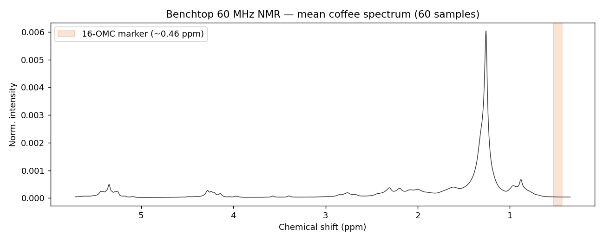
前處理與「標籤從哪來」
4201 個點先做 面積標準化（消除濃度差異）、再 分箱（每 0.04 ppm 併成一桶 → 133 桶，降維去噪）。這份資料只有光譜、沒有現成標籤，所以我們把 0.43–0.53 ppm 的標記峰積分當作「16-OMC 標記量」：當成 PLS 的連續目標，再以中位數切成 高 / 低兩組當 PLS-DA 的類別（模擬真偽快篩的 pass/fail 門檻）。
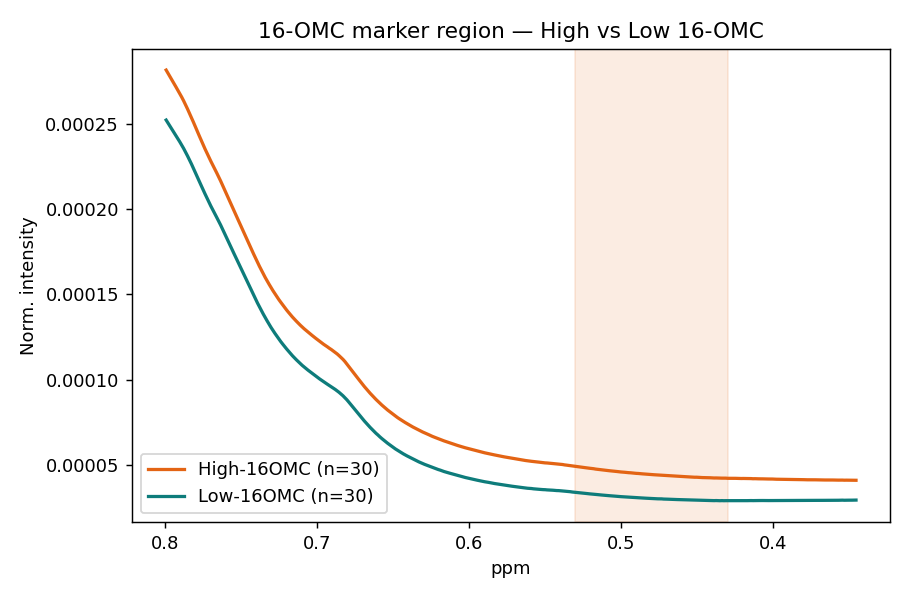
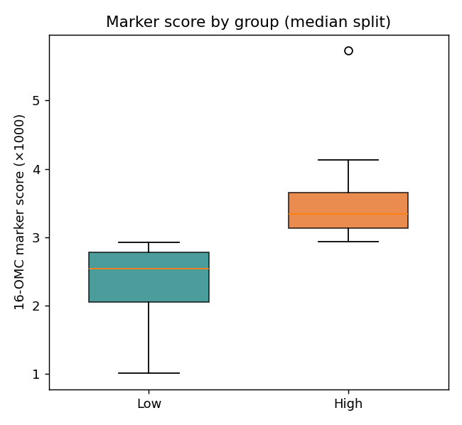
| 項目 | 數值 | 說明 |
|---|---|---|
| 樣本數 | 60 | 市售「Arabica」咖啡（CS×54、DH×6） |
| 原始 ppm 點 | 4201 | 0.35–5.71 ppm，60 MHz benchtop |
| 分箱後維度 | 133 | 0.04 ppm / 桶 |
| PLS 目標（回歸） | 16-OMC 標記量 | 0.43–0.53 ppm 積分，連續值 |
| PLS-DA 類別 | 高 / 低 | 標記量中位數切分，各 30 支 |
PCA：把 133 個桶壓成幾個方向
主成分分析（PCA）在資料最分散的方向上建立新座標：PC1 是變異最大的方向、PC2 與它垂直且次大……少數幾個主成分就能描述整體化學結構，不需要任何標籤。
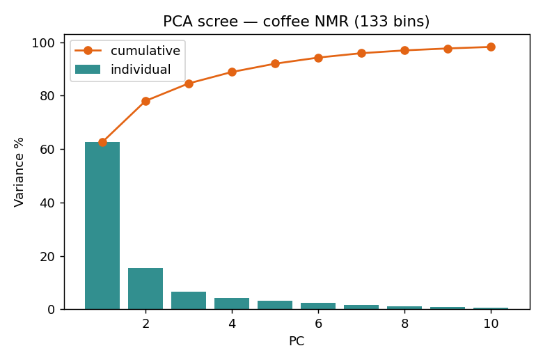
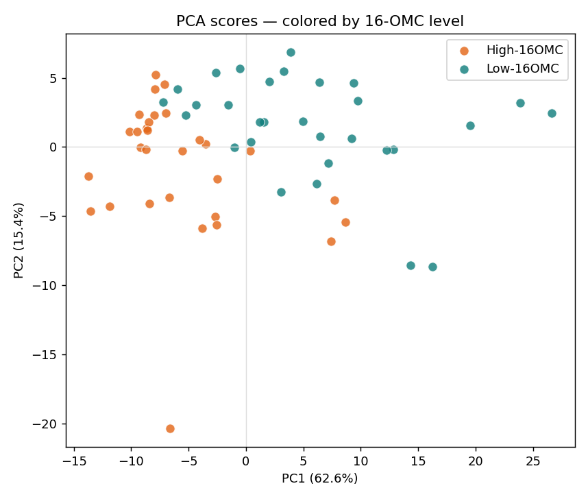
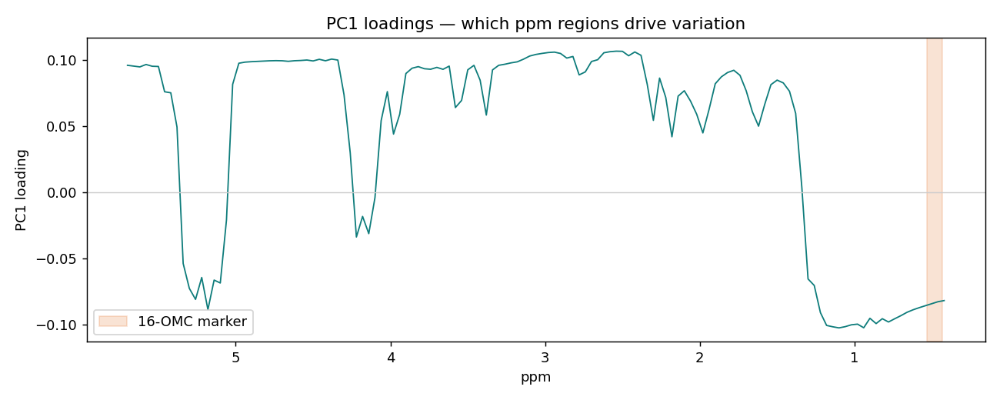
PLS：從指紋「定量」摻假標記
偏最小平方回歸（PLS）找的是「同時解釋光譜 X、又跟目標 y 最相關」的方向，特別適合「特徵多（133）、樣本少（60）、又高度共線」的光譜資料。我們用它來預測 16-OMC 標記量。
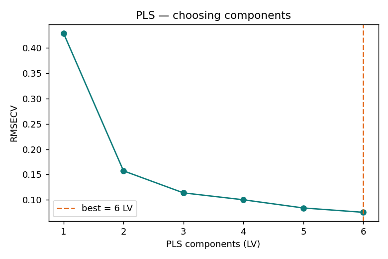
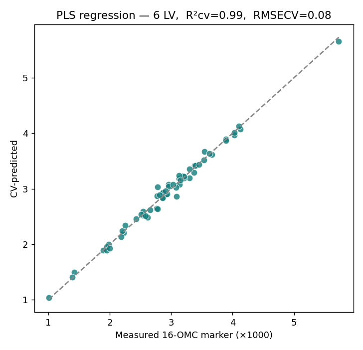
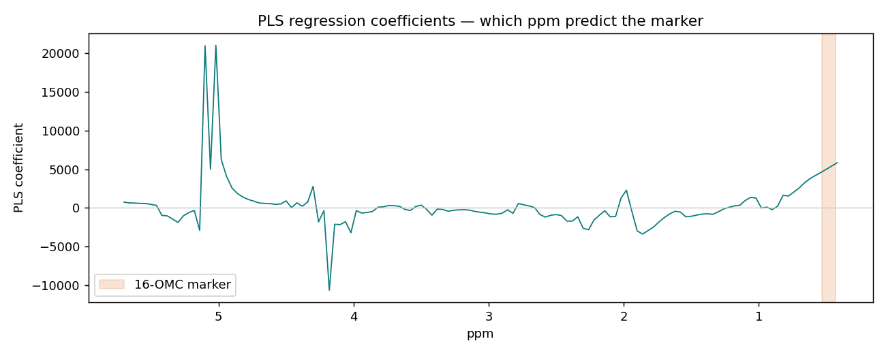
PLS-DA：真偽「快篩」分類
如果只想知道一支咖啡「16-OMC 偏高或偏低」（pass/fail），就用 PLS-DA：把類別編成 0/1，對它做 PLS 回歸，再以 0.5 為界判類。同樣排除標記區段，測試「其餘指紋」能不能分辨高低。
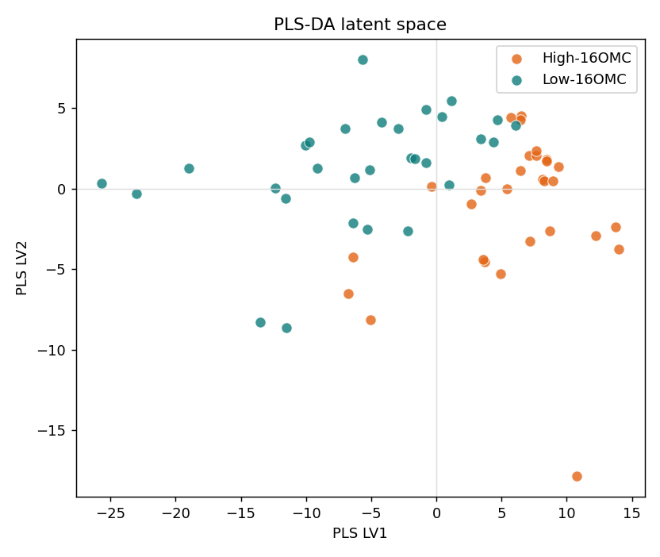
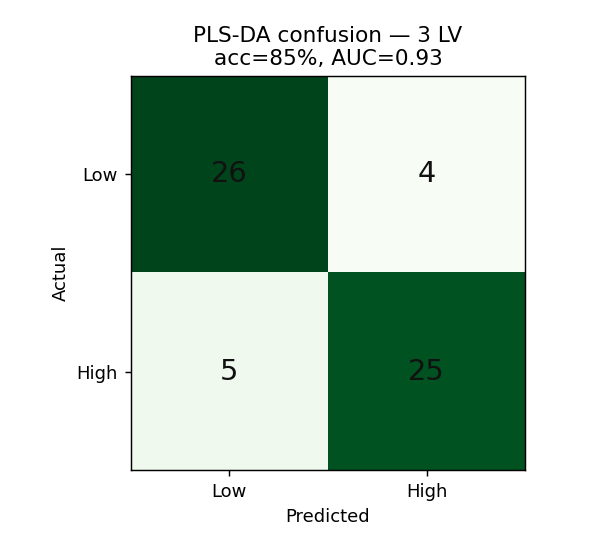
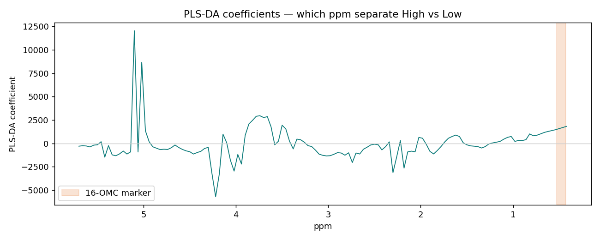
用 scikit-learn 重現
四支腳本，依序跑完就能產出上面所有圖（輸出到 python/figures/）。
pip install pyreadr pandas numpy scikit-learn matplotlib
python python/00_get_data.py # 下載光譜、面積歸一、分箱、算 16-OMC 標記、輸出 CSV/Orange
python python/01_explore.py # 平均光譜、標記區高/低對照、標記量箱形圖
python python/02_pca.py # 標準化 + PCA -> 陡坡 / 分數 / 負荷
python python/03_pls.py # PLS 回歸定量 16-OMC（排除標記區）
python python/04_plsda.py # PLS-DA 高/低分類（排除標記區）PLS 的核心（scikit-learn）：
from sklearn.cross_decomposition import PLSRegression
from sklearn.model_selection import cross_val_predict, KFold
pls = PLSRegression(n_components=4)
y_cv = cross_val_predict(pls, X, y, cv=KFold(5, shuffle=True, random_state=0))
# 回歸：y 是連續的 16-OMC 標記量；PLS-DA：y 改成 0/1 類別，再用 0.5 判類用 Orange Data Mining 拉一遍
資料檔 data/coffee_nmr_orange.tab（group 已設 class、marker_score 為連續、133 個分箱特徵）。
- File → 開
coffee_nmr_orange.tab→ 接 Data Table 看 60 列。 - Preprocess：勾 Normalize features（標準化）。
- PCA → 接 Scatter Plot，x=PC1、y=PC2、Color=
group→ 看高/低沿 PC1 分開。 - 回歸（PLS）：Select Columns 把
marker_score設 Target → PLS + Test & Score（交叉驗證）看 R² / RMSE。 - 分類（PLS-DA / 判別）：把
group設 Target → Logistic Regression 或 PLS + Test & Score + Confusion Matrix。
b0.44、b0.48、b0.52）設為 ignore，避免用標記峰直接「抄答案」。一份光譜，三個方法
PCA
非監督探索：60 支咖啡的主要差異方向，PC1 就對上摻假程度。PLS 回歸
監督定量：用指紋（去掉標記峰）預測 16-OMC，R²cv 0.99。PLS-DA
監督分類：真偽快篩高/低，準確率 85%、AUC 0.93。同主題搭配課程
資料來源：QIBChemometrics / Benchtop-NMR-Coffee-Survey（Gunning et al., Food Chemistry 2018, doi:10.1016/j.foodchem.2017.12.034）。